Chủ động với lịch
Xem ngày, tuần, tháng. Đăng ký sự kiện, buổi trực và xem những người cùng trực.
CLB AI-ROBOTICS · TRỰC THUỘC DNTU
Lịch hoạt động, đăng ký trực, điểm danh và đóng quỹ. Một nơi để thành viên theo dõi và cùng nhau xây dựng CLB.
Ứng dụng nội bộ. Tài khoản được BCN/Admin cấp cho thành viên.


XEM TRƯỚC ARC
Ảnh chụp từ giao diện Flutter ARC đang chạy. Dữ liệu trên ảnh là dữ liệu minh họa. Chọn một màn hình rồi nhấn ảnh để xem lớn.
Trang chủ phân bố theo vai trò. Thành viên và BCN/Admin có các chức năng phù hợp với tài khoản.
Giao diện ARC thật · Dữ liệu minh họa · 30/10/2026ARC TRÊN TỪNG MÀN HÌNH
Ảnh được chụp từ client Flutter ARC trên mobile và desktop. Tên và số liệu hiển thị chỉ dùng minh họa.
Mở bộ giới thiệu đầy đủ ↗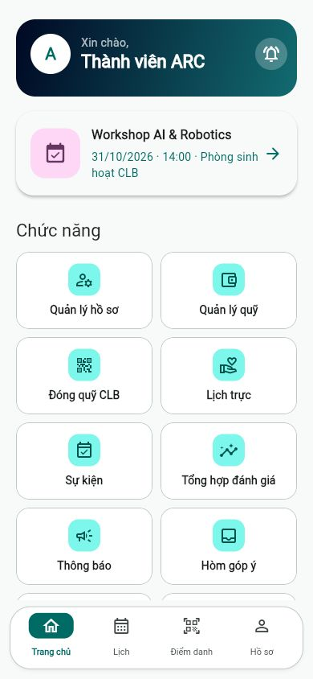
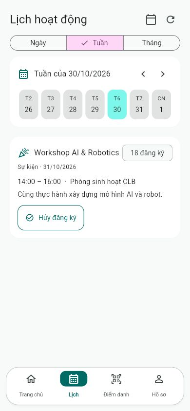
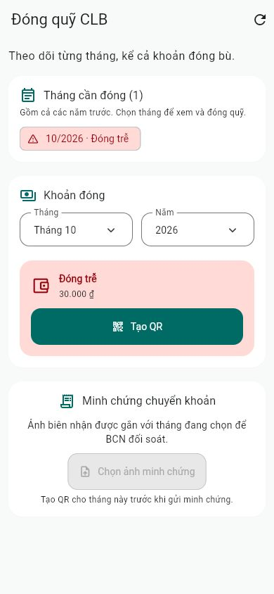
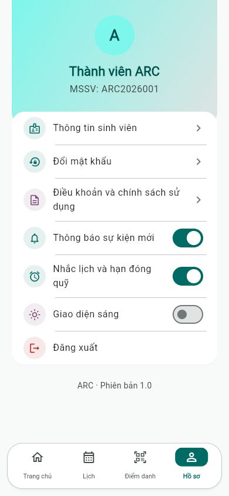
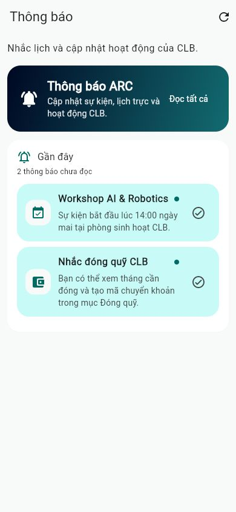
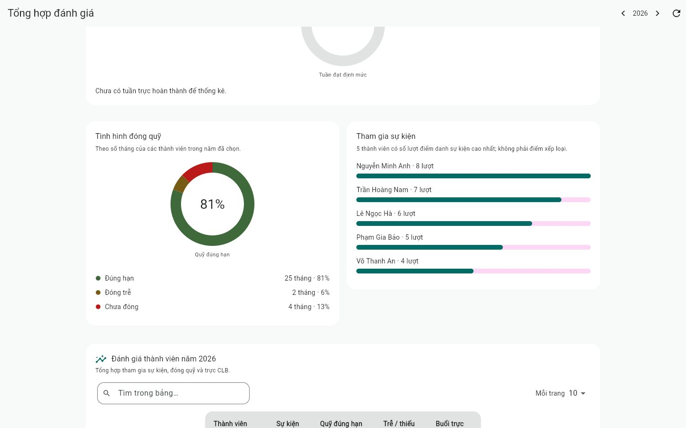
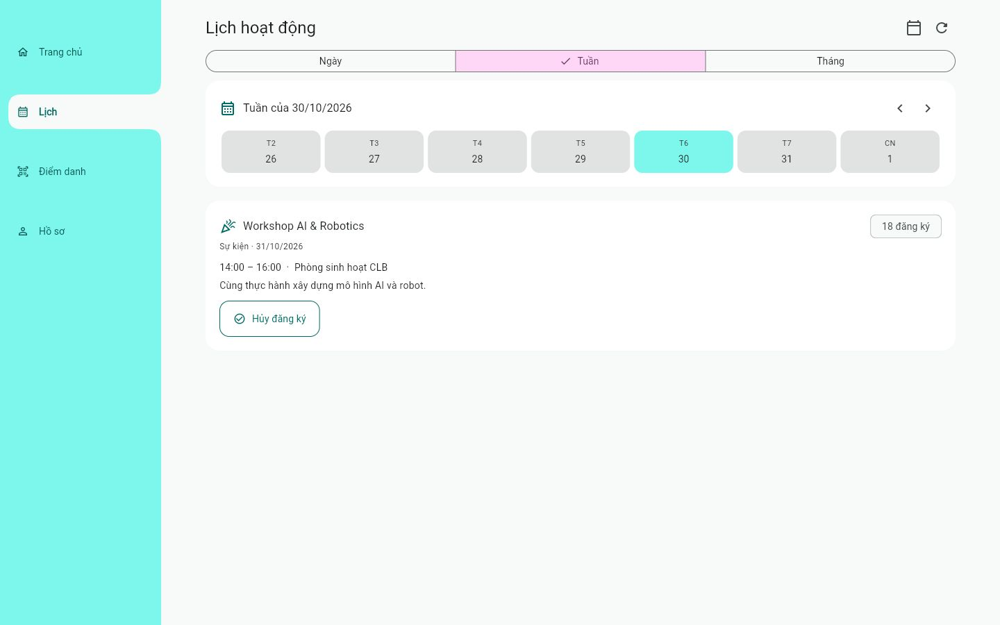
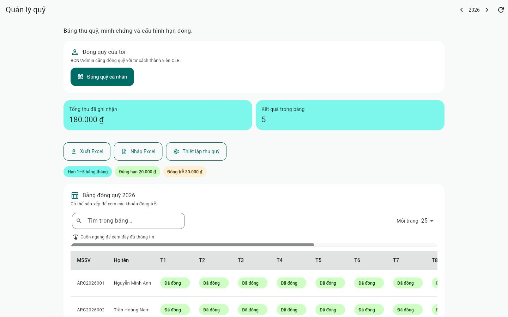
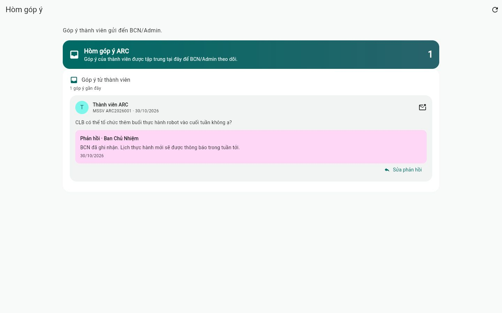
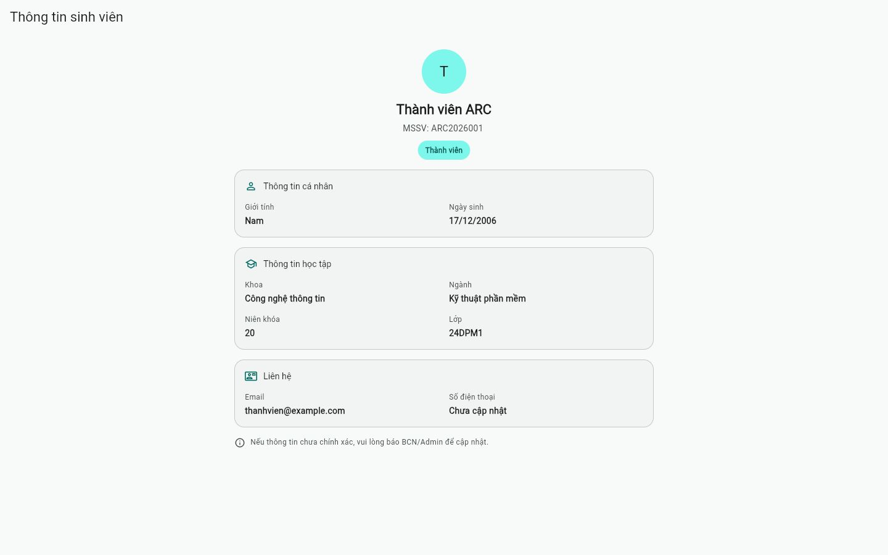
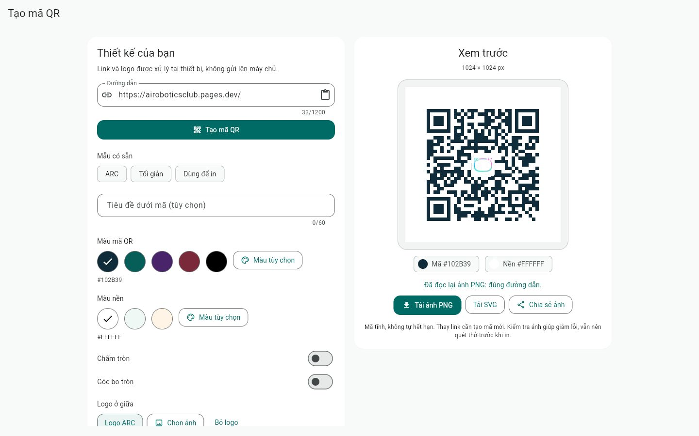
Ảnh giao diện được chụp từ client ARC. Dữ liệu thành viên và hoạt động trong ảnh là dữ liệu minh họa, không phải hồ sơ thật.
THIẾT KẾ CHO THÀNH VIÊN
Xem ngày, tuần, tháng. Đăng ký sự kiện, buổi trực và xem những người cùng trực.
Quét QR hoặc nhập PIN. Vị trí được kiểm tra trong cả hai cách điểm danh.
QR theo số tiền và nội dung của bạn. Gửi minh chứng cho tháng hiện tại hoặc tháng cần đóng bù.
Hồ sơ, quy định CLB và hòm góp ý. BCN quản lý tập trung trong giao diện riêng.
MỘT KHÔNG GIAN CHUNG
ARC giúp thành viên biết mình cần làm gì, và giúp BCN theo dõi hoạt động trong cùng một hệ thống.
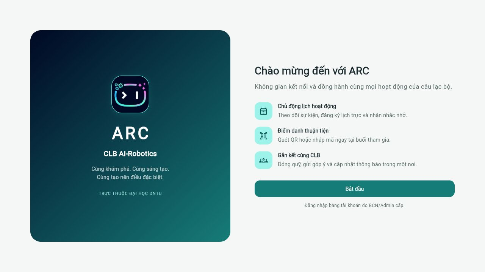
BCN/Admin cấp tài khoản cho thành viên CLB.
Mở bản web hoặc cài bản phù hợp với thiết bị.
Kiểm tra lịch, đăng ký và theo dõi thông tin CLB.
BẮT ĐẦU VỚI ARC
CHỌN NỀN TẢNG CỦA BẠN
Đang kiểm tra bản tải mới nhất…
KHÔNG MUỐN CÀI APP?
Cùng tài khoản CLB, giao diện thích nghi với điện thoại và PC.
QR mở liên kết tải. Bạn cần xác nhận cài đặt trên thiết bị; website không thể tự cài ứng dụng.
Các bản phát hành và SHA-256 ↗TRƯỚC KHI CÀI ĐẶT
ARC phát hành nội bộ. APK Android có chữ ký ARC; Windows chưa ký Authenticode, macOS chưa notarize. iOS cần IPA đã ký và provisioning hợp lệ trước khi có thể cài.
Tải từ các liên kết chính thức tại đây và đối chiếu SHA-256 trong release. Không tắt bảo vệ thiết bị để cài app.
HỖ TRỢ THÀNH VIÊN
Đầu mối phụ trách: Harashi Yowshi.
HarashiYowshi@gmail.com ↗Dữ liệu lưu không thời hạn; yêu cầu xóa được xác minh và xử lý qua đầu mối hỗ trợ.
Điều khoản và quyền riêng tư